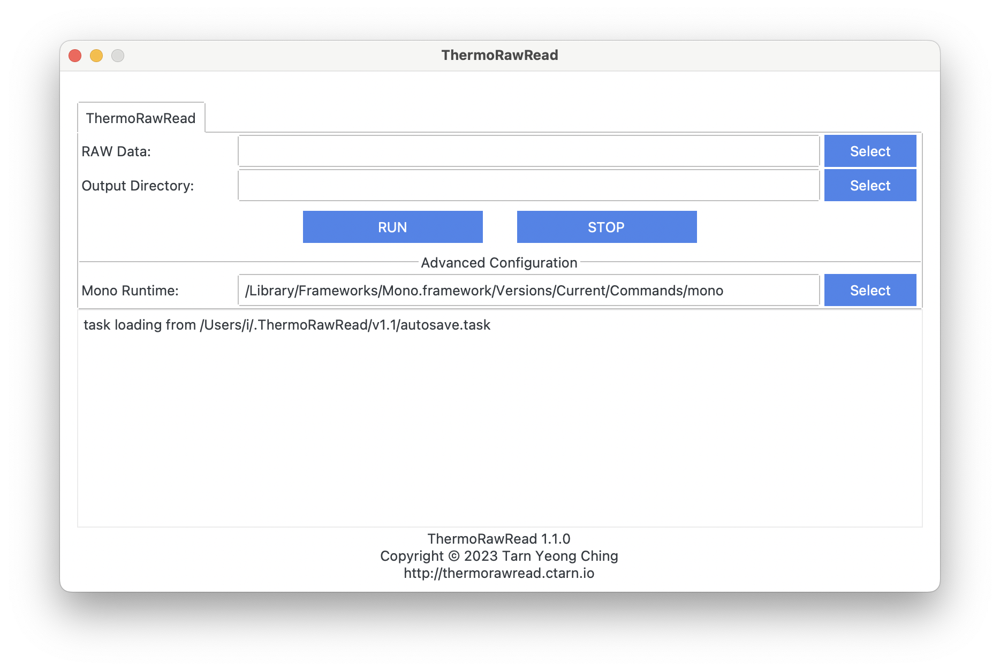

Usage
- Mono is required on Linux or macOS. Please install Mono from the offical website.
- For Ubuntu users, please do follow the instructions instead of installing mono-runtime from Ubuntu's original repository.
Release

{{ release }}
Q&A
-
macOS says: “ThermoRawRead.app” is damaged and can’t be opened. You should move it to the Trash.
Please run `sudo xattr -r -d com.apple.quarantine [path/to/ThermoRawRead.app]` in terminal. -
Windows Security stops the software and deletes the .exe file.
The software is packaged using PyInstaller, and can be detected as virus by mistake on Windows (see the issue). Please restore the deleted file from `Protection History`, and Windows Security should not stop or delete it again. Otherwise, please add the software to white list. You can also package the software from source yourself.